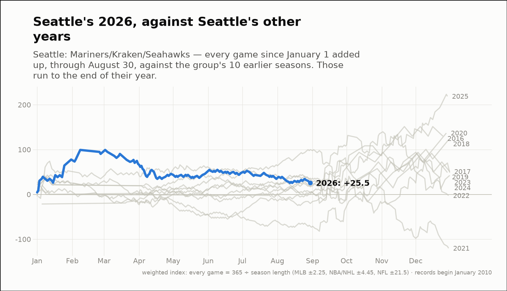
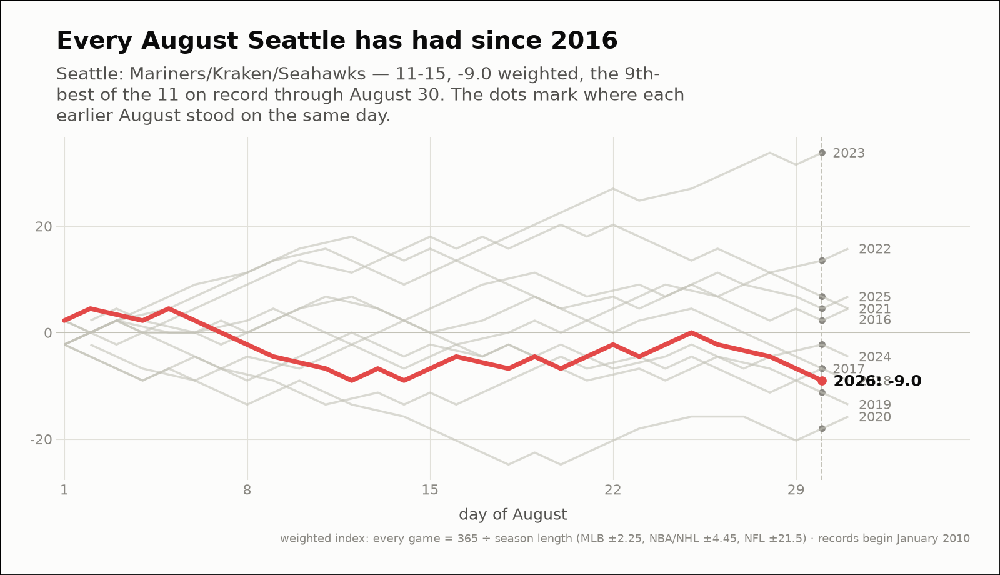
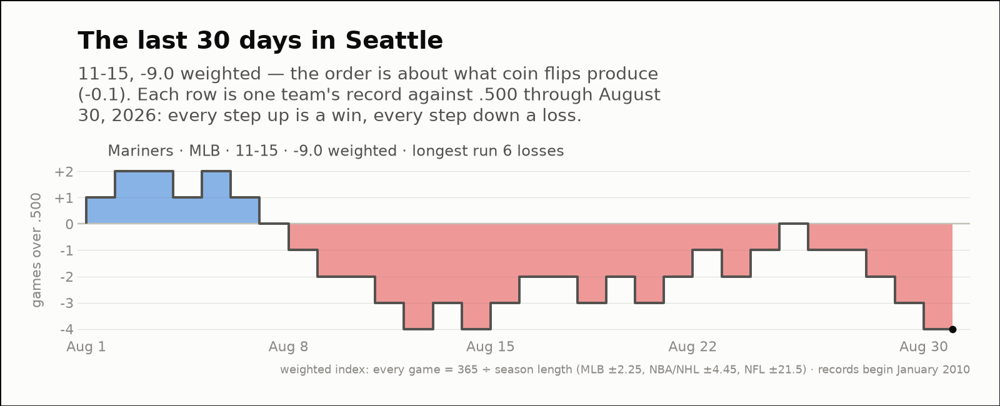

City of the day — Seattle
Seattle: Mariners/Kraken/Seahawks
- 2026 so far
- 86-100, +25.5 weighted over 186 games; longest run 8 straight losses
- Order of results
- about as clumped as coin flips (+0.8)
- Earlier seasons (full-year weighted)
- 2016 +129.9, 2017 +50.9, 2018 +121.9, 2019 +48.8, 2020 +136.8, 2021 -120.2, 2022 -2.5, 2023 +48.6, 2024 +42.4, 2025 +218.9
- Last 30 days
- 11-15, -9.0 weighted; longest run 6 straight losses
- Window opens
- August 1, 2026
- August 2026 through day 30
- 11-15, -9.0 weighted — the 9th-best of the 11 on record
- Same August in earlier years (same stretch)
- 2016 +6.8, 2017 -6.8, 2018 -6.8, 2019 -11.3, 2020 -18.0, 2021 +2.2, 2022 +13.5, 2023 +33.8, 2024 -2.2, 2025 +4.5
| Team | Last 30 days | Weighted | Longest run |
|---|---|---|---|
| Mariners | 11-15 | -9.0 | 6 straight losses |


